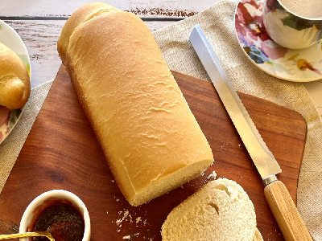

Pão
Ingredientes
3 xicaras de leite morno
3 ovos
1 xicara de óleo
1 colher de sopa de sal
6 colheres de sopa de açúcar
50g de fermento fresco (1 pacote do seco)
1kg de farinha (pode ser mais ou menos, depende da consistência do pão)
Modo de Preparo
Em uma tigela, dissolva o fermento no açúcar
Em seguida, acrescente o oleo, o ovo e o leite e mexa.
Vá acrescentando a farinha aos poucos, até ficar mais consistente
Enfarinhe uma bancada, ponha a massa e vá acrescentando e sovando, até que não esteja mais pegajosa
A textura deve ser uma massa lisa, não muito dura
Deixe descansar por uns 10 minutos, em seguida modele os pães e coloque em uma assadeira untada e cubra
Asse quando tiver dobrado de volume (em dias quentes, em média 30minutos crescendo)
Obs: Não sovar muito, pois quanto mais sovar, mais vai precisar de farinha.
A massa deve ser mole, mas não "molenga", e nem dura. Lembra massinha de modelar.
O leite deve estar morno, jamais quente, e os ovos de preferência em temperatura ambiente.